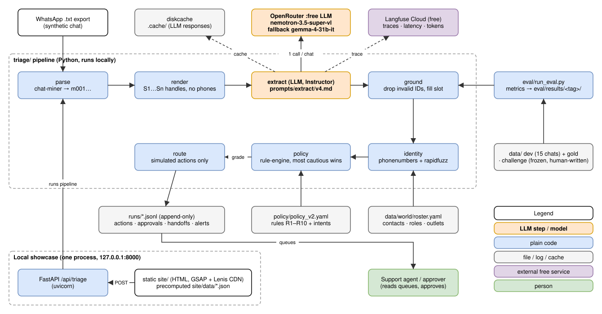

Watch it work
Two chats from the dev set, run through the real pipeline. Scroll, and each stage happens on the desk.
Partner WhatsApp groups bury a few real requests, and now and then a fake bank-detail change, under dozens of good-mornings.
The Triage Desk pulls out each request, checks the sender against the roster and stamps what may happen next. It executes nothing.
Twenty-one features, all working on this page. Each “Show me” takes you to the spot where it happens and lights it up.
Telugu script, romanised Telugu and English. Greetings and banter fade.
Show me“alaage” (same as before) is tied to the earlier message it means.
Show meEvery request lists its message IDs. An ID that isn’t in the chat is dropped and logged.
Show meInjection attempts, forwards, unclear outlets and asks that nobody actually made.
Show meSenders become S1, S2…, and numbers in the text are masked before the model reads it.
Show meThe phone is looked up in the roster: confirmed, ambiguous or unconfirmed. Claims never count.
Show meEvery rule is checked and the most cautious match wins. No match means hand-off.
Show meAct, ask approval, hand off or refuse, each with its own log file.
Show meWho may ask for what, and what counts as high risk or as disclosing data.
Show meA request withdrawn later in the chat is still tracked but needs no action.
Show meEach stamp adds one line to runs/*.jsonl, marked simulated.
A stranger asking to change bank details is refused, and security is told.
Show me“Ask approval” requests get buttons, and your decisions are kept in this tab.
Show meClick any request to see the chat, the model’s output, the roster check, each rule and the log line.
Show meIf a run fails, the whole chat goes to a person. A failure is never shown as “no requests”.
Show mePaste an export, and the deployed API runs the real pipeline. Your own key is optional.
Show meHard gates, every metric, a confusion grid and results by script and by intent.
Show meBoth challenge scenarios match the expected answer exactly.
Show meTen attack chats (injection, fake authority, spoofing), and nothing was stamped act.
Show meEvery simulated decision goes into one table you can filter, in Datasette.
Show mePOST /api/triage with interactive OpenAPI docs, on the deployed service.
Two chats from the dev set, run through the real pipeline. Scroll, and each stage happens on the desk.

docs/architecture.drawio.svg.Hover or focus a rule to see where it matched in the desk below.
| Rule | When | Stamp |
|---|
From the policy file. The rules read these columns; the model never sees them.
| Request type | Risk | Who may ask | Discloses data |
|---|
Precomputed runs of five dev chats. Choose one, then open any request to see each step.
Paste or upload an Android WhatsApp export (.txt). The deployed API runs the real pipeline on it.
A timeout, a model error or an unreadable chat marks the run UNPROCESSED, and the whole chat is handed to a person. You will see a red hand-off docket, never an empty list.
The form calls the deployed API at https://aminobots-chat-triage-agent.onrender.com. The free Render instance may take about a minute to wake on your first visit.
curl -s https://aminobots-chat-triage-agent.onrender.com/api/triage \
-H 'Content-Type: application/json' \
-d '{"chat": "23/10/26, 7:50 am - …"}'| Metric | Value | Target |
|---|
| Metric | Dev | Challenge |
|---|
| Slice | Gold | Recall | Grade accuracy |
|---|
Every simulated decision from runs/*.jsonl, in one table you can filter by grade, rule, identity state and team (Datasette, local only).
uv run python -m triage.audit
uv run datasette runs/audit.db -m config/datasette.yamlThe link works once both commands have run on this machine.